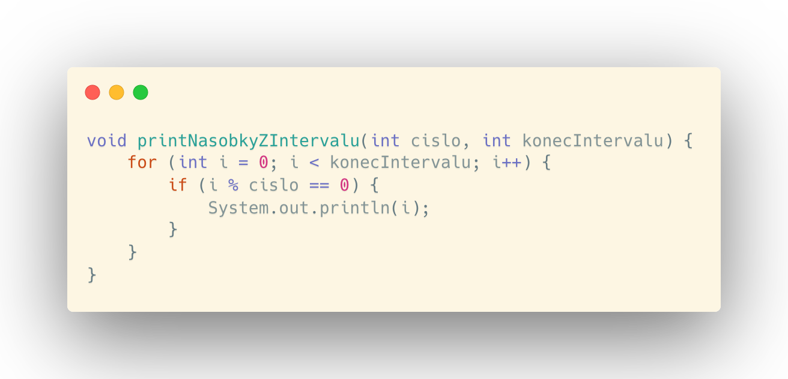
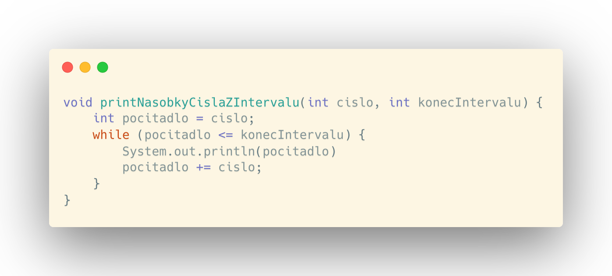
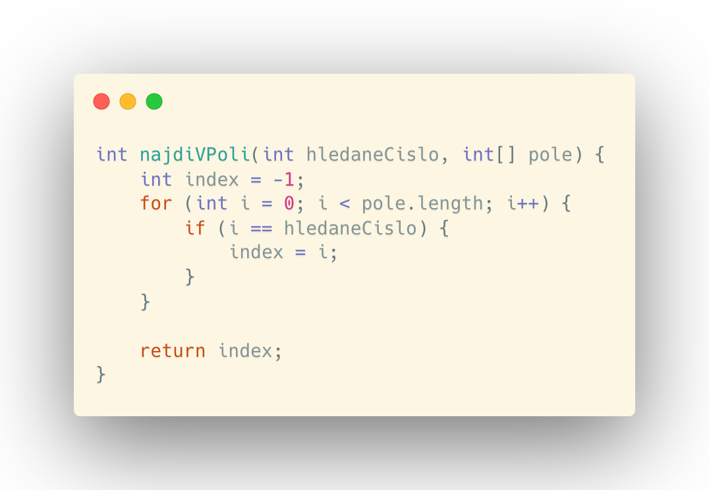
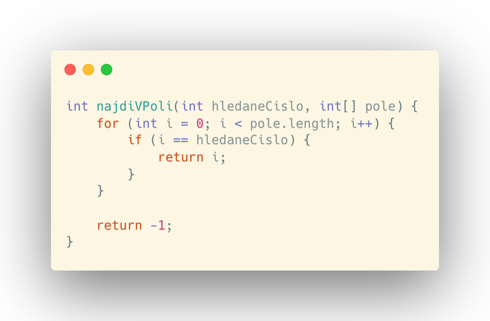
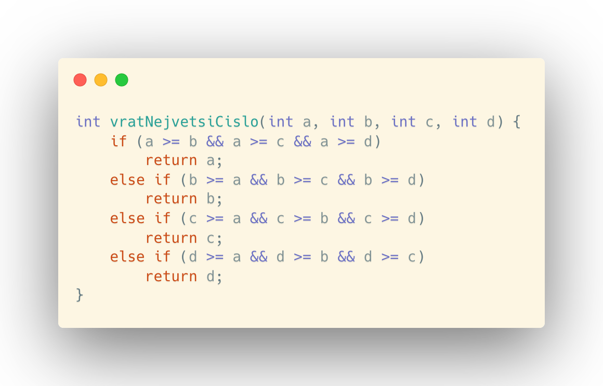
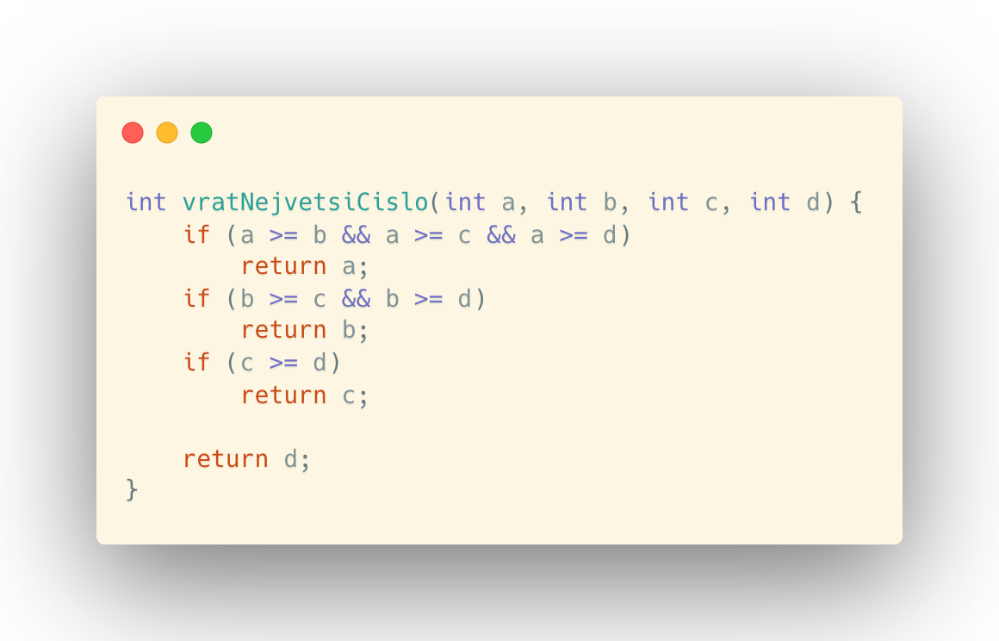
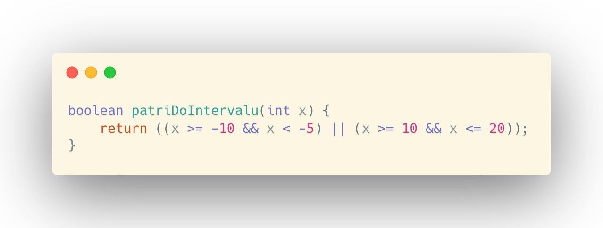
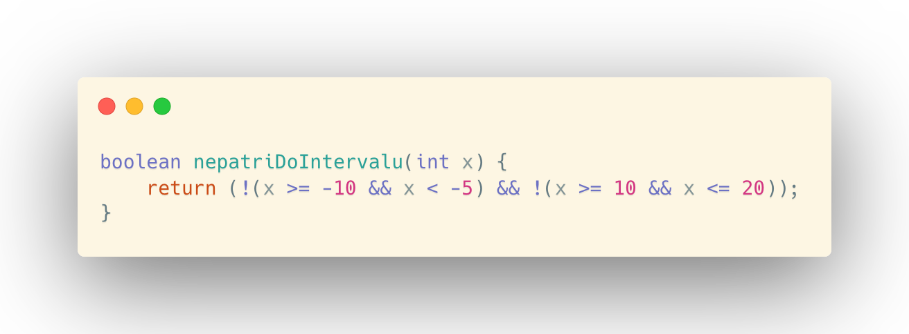
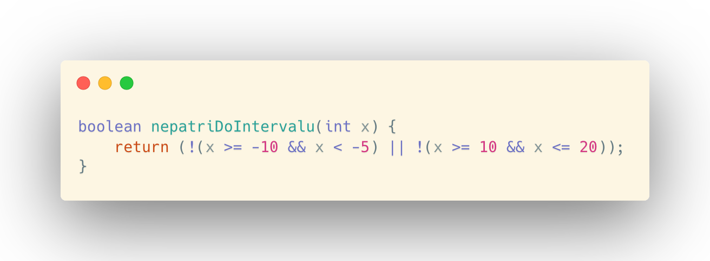
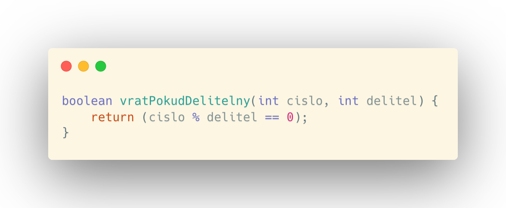

V této kapitole se podíváme na to, jak otestovat dělitelnost libovolného čísla, na základní operaci s polem, na časté chyby při hodnocení, zda číslo patří do intervalu nebo na to, co je modulo operace.
DĚLITELNOST ČÍSEL
Vypsání násobků čísla do určitého intervalu
První podkapitolou jednoduchých algortmů jsou algoritmy spojené s dělitelností čísel. Jakožto první problém budeme vytvořením metody řešit algoritmus, který má vypsat všechny násobky zadaného čísla od nuly do zadaného intervalu. Pro zjednodušení budeme předpokládat, že tyto udáje budou zadané v hlavičce této metody a číslo, jehož násobky chceme najít, nebude záporné, nula nebo jedna a konečný interval také a zároveň bude větší nebo roven zadanému číslu tzn. vstupní čísla mohou být číslo: 20, konečný interval: 100. Program tak vypíše 20, 40, 60, 80, 100.
Takováto úloha má více řešení např.:
Takovéto řešení není příliš efektvní!
Proč?
Algoritmus prochází všechna čísla od 1 až do konce intervalu a testuje, zda aktuální číslo vyhovuje zadání. To však není potřeba, neboť testujeme čísla, která nikdy násobky být nemůžou, což dokážeme vyvodit ze zadání. Není tak třeba si přidělávat práci.
Lepším řešením může být toto:
Druhé řešení je o mnoho lepší, protože při tomto řešení nevhodná čísla netestujeme a pouze zvětšujeme počítadlo o další násobek do doby, než překročíme konečný interval. Vždy co najdeme nový násobek patřící do intervalu, tak ho vypíšeme.
PRÁCE S POLEM
Nalezení čísla v poli
První příkladem na algorimy pro práci s polem může být například takovéto zadání. Nalezněte a vraťte index hledaného čísla v zadaném poli celých čísel. Pokud se v poli hledané číslo nevyskytuje, program vrátí -1. Tzn. pokud bedeme mít zadané pole [1 ,2 , 5, 6, 8, 10, -2, 4, 1] a budeme hledat číslo 5, program vrátí 2
Zde je první zcela primitivní řešení tohoto problému:
Takovéto řešení je zcela funkční, přesto nefektivní. Když totiž budeme mít pole dělky např. 1000 a hledané číslu bude hned na prvním indexu, pak program bude procházet i všechna ostatní čísla, přestože jsme již našli výsledek.
Lepším řešením bude toto:
VELIKOSTI PROMĚNNÝCH
Vrácení největšího čísla
Nyní napíšeme program, který bude mít na vstupu 4 celočíselné proměnné a vrátí největší v nich. Tzn. pokud budou na vstupu čísla 3, 7, 7, 10, pak program vrátí 7
Takovýto algoritmus není ideální. Kontroluje totiž veliost proměnných, kterou již z předchozích porovnání známe. Např. v první podmínce se ptáme, zda je větší proměnná a než proměnná b. Pokud tato podmínka neplatí znamená to, že proměnná b musí být určitě větší než proměnná a. Druhou podmínku tak můžeme zkrátit a ušetřit si práci.
Lepší podoba takového algoritmu může být takováto:
Kontrola, zda číslo patří do intervalu
Jakožto další algoritmus si představíme takový, který vrátí true když číslo patří do zadaného intervalu, jinak vrátí false. Vstupní číslo x patří do intervalu <-10; -5) nebo patří do intervalu <10;20>
Řešení této úlohy:
Kontrola, zda číslo nepatří do intervalu - úloha 1
Druhým příkladem na intervali bude velice podobná úloha. Znovu chceme zjistit, zda do určeného intervalu vstupní číslo patří. Vstupní číslo x nepatří do intervalu <-10; -5) ani do intervalu <10;20>
Řešení této úlohy:
Kontrola, zda číslo nepatří do intervalu - úloha 2
Dalším příkladem na intervalu je velice obdobná úloha předchozí. Vrátíme true, pokud podmínka platí či false, je-li to naopak. Pokud zadané číslo x nepatří do intervalu <-10; 5) nebo nepatří do intervalu <10;20>, pak podmínka platí. Program tedy vrací true.
Ukázkové řešení této úlohy:
Všimněme si rozdílu řešení této a předchozí úlohy. Každé řešení znamená něco jiného! Jedním z problému, se kterými se programátoři při vytváření potýkají je právě problematika logických operátorů, jejichž podobnost je leckdy zavádějící.
MODULO OPERACE
Test dělitelnosti
S operátorem modulo jsme se již setkali v úloze na dělitelnost čísel. Operátor modulo vrací zbytek po dělení nějakých číslem. Zapisujeme ho znakem pro procenta (%) např. Když máme takovýto příklad: 12 % 7 = ?, pak výsledkem bude číslo 5. V programování ho využíváme zejména k tvoření podmínek. Jeho triviální využití si vyzkoušíme v následující úloze.
Napíšeme program, který vrátí true, pokud je zadáné číslo dělitelné druhým zadaným číslem v hlavičce metody, jinak vrátí false
S modulem se jistě setkáme i v dalších algorimech.